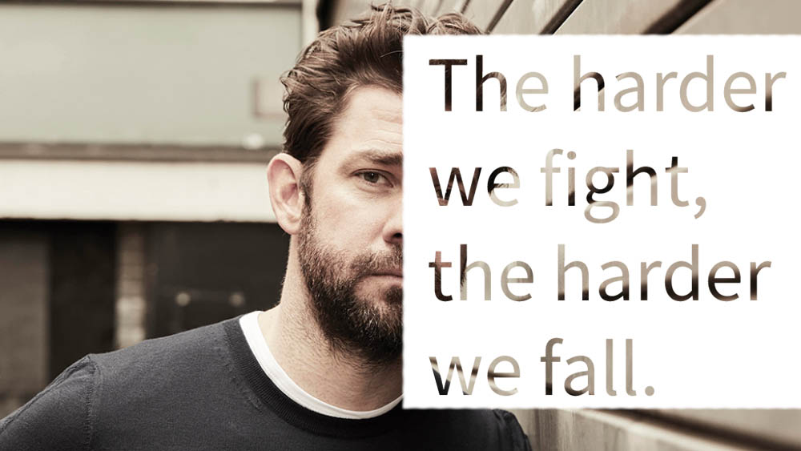
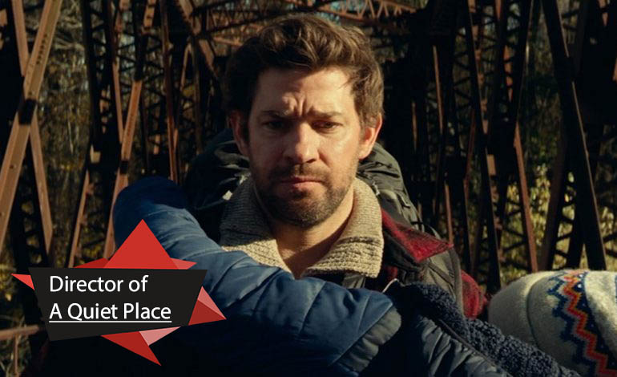

John Krasinski is an American actor who shot to stardom in 2005 as Jim Halpert on The Office. Krasinski landed substantial roles on the big screen around this time as well, starring in License to Wed (2007) and Leatherheads (2008). He has directed three films — 2009's Brief Interviews with Hideous Men, the 2015 dramatic comedy The Hollars and 2018's horror hit A Quiet Place. Also in 2018, Krasinski began starring in the Amazon series Jack Ryan.
Born on October 20, 1979, in Newton, Massachusetts, John Krasinski is best known for playing Jim Halpert on the hit sitcom The Office. He met B.J. Novak, a future Office castmate, when they were kids. They played little league baseball and attended school together, and Krasinski later appeared in one of Novak's plays. At Newton South High School, he also played basketball and ran cross-country. After high school, Krasinski attended Brown University, where he focused on playwriting. He also worked as an intern on Late Night with Conan O'Brien during this time and was part of a sketch comedy group called Out of Bounds.
In 2005, Krasinski's career took off with the debut of the television series The Office. In the series, Krasinski played Jim Halpert, a paper salesman who has a crush on his company's receptionist, Pam (Jenna Fischer). His character also must cope with oddball fellow salesman Dwight (Rainn Wilson) and his daffy boss, Michael Scott (Steve Carell). Based on the British series of the same name, this workplace comedy struck a chord with TV viewers and would go on to win several Emmy Awards.
While on The Office, Krasinski explored other acting opportunities as well. He landed a starring role in the 2007 romantic comedy License to Wed with Robin Williams and Mandy Moore. The following year, he appeared with George Clooney in Leatherheads, a look at the early days of football. Krasinski also found time to create the 2009 film Brief Interviews with Hideous Men, which he adapted from a collection of short stories by David Foster Wallace. He directed and acted in the film as well. That same year, Krasinski appeared opposite Meryl Streep and Alec Baldwin in It's Complicated. In 2012, he co-wrote and starred in the environmental film Promised Land with Matt Damon.
In 2018, Krasinski co-wrote, directed and starred in A Quiet Place, opposite his wife, Emily Blunt. The horror flick became a huge hit at the box office, grossing a reported $340 million worldwide, and was also praised by critics. That same year, he voiced the main robot character in the Chinese-American animated flick Next Gen.
Also in 2018, Krasinski began starring in the Amazon thriller series Jack Ryan, as the titular CIA employee who moves from a desk job as an analyst into the line of fire. The success of Jack Ryan led to a renewal for season 2, which premiered in October 2019.